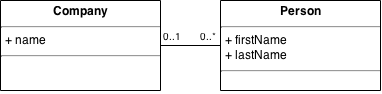

Flyway
Databasemigreringer på den enkle måten
Av Frode Rystad / @froderystad
Hva er databasemigreringer?
Kontroll på kildekoden - DET har vi!
- Git forteller oss nøyaktig hvilke endringer som er hvor.
- Maven og Nexus gir oss reproduserbare bygg.
Hva med databasen?
- Hvilken tilstand er databasen i på denne maskinen?
- Har et skript allerede blitt kjørt, eller ikke?
- Har quick-fiksen vi gjorde i produksjon blitt kjørt inn i testmiljøet?
- Hvordan setter vi opp en ny database-instans?
Ofte er svaret: Vi vet ikke
Databasemigreringer to the rescue
- Deterministisk migrering fra én databasetilstand til neste
- Får kontroll på databaseskjemaets tilstand
- Lett å opprette database fra scratch
- Versjoneres med kildekoden
- Kan jobbe på flere branches
- Muliggjør Continous Delivery
- Kan tas i bruk nå, uansett hvor du er i prosjektet ditt!
Hvorfor Flyway?
- Enkelt verktøy, som gjør sine ting bra.
- Kan brukes fra kommandolinje, Java-API, Maven, m.m.
- Migreringer er ren SQL, eller Java-kode.
- Det virket for oss første gang, og har fortsatt å virke siden.
Demo
Test-drevet databaseutvikling med JPA og Flyway.
Funksjonalitet
Enkel domenemodell: Company - Person(s)

Teknisk
- Hibernate som JPA-provider
- H2 som database
- Bygger i Maven
- Kjører i Java
Hva er alternativet?
- Støtte for flere databaser fra samme definisjon
- Støtter XML, YAML, JSON og SQL som definisjonsspråk
- Kan generere diff som SQL
- Kan generere dokumentasjon
- Støtte for forskjellige grunndatasett i f.eks. test og prod
- Rollback
- Refactoring
Anbefalte praksiser for FLYWAY
- Aldri endre på en pushet migrering
- Bruk tidsstempel som versjonsnummer - det fungerer best i større team, og over flere branches.
- Versjoner grunndata sammen med databaseskjemaet.
- Én kildekodefil per funksjon per revisjon